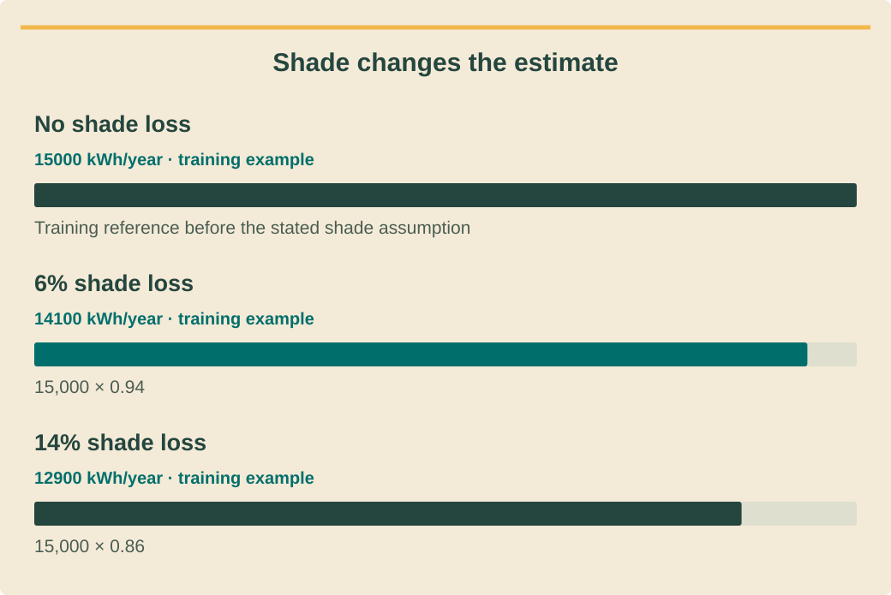

Design and permittingתכנון ורישויออกแบบและขออนุญาต · 2 / 9
Shade and yield scenariosהצללה ותרחישי תפוקהเงาบังและสถานการณ์ผลผลิต
Build a repeatable yield comparison and explain its uncertainty.בונים השוואת תפוקה ניתנת לשחזור ומסבירים את אי־הוודאות.สร้างการเปรียบเทียบผลผลิตที่ทำซ้ำได้และอธิบายความไม่แน่นอน
What you will be able to doמה תדעו לעשותสิ่งที่คุณจะทำได้
- Record weather, geometry and loss assumptions.לתעד מזג אוויר, גאומטריה והפסדים.บันทึกอากาศ รูปทรง และสมมติฐานสูญเสีย
- Compare production against the actual load timeline.להשוות ייצור לציר זמן העומס.เทียบผลผลิตกับเวลาใช้โหลดจริง
- Communicate a scenario range without turning it into a guarantee.לתקשר טווח תרחישים בלי להפכו להבטחה.สื่อช่วงสถานการณ์โดยไม่แปลงเป็นคำรับประกัน
Keep the model reproducibleשומרים על מודל שניתן לשחזורให้แบบจำลองทำซ้ำได้
Record the tool version, weather source and location, array DC capacity, orientation, tilt and loss assumptions before reading the annual output. PVWatts is a preliminary estimate with simplified equipment assumptions. Its output is a design input to review, not proof that the proposed strings or protections are valid.לפני קריאת תפוקה שנתית תעדו גרסת כלי, מקור ומיקום מזג אוויר, הספק DC, כיוון, הטיה והפסדים. PVWatts הוא אומדן ראשוני עם הנחות ציוד מפושטות. תוצאתו היא קלט לבדיקה, לא הוכחה לתקינות מחרוזות או הגנות.ก่อนอ่านพลังงานรายปี บันทึกรุ่นเครื่องมือ แหล่งอากาศ พิกัด กำลัง DC ทิศ ความเอียง และการสูญเสีย PVWatts เป็นประมาณการเบื้องต้นใช้อุปกรณ์แบบง่าย ผลเป็นข้อมูลทบทวน ไม่พิสูจน์ว่าสตริงหรือการป้องกันถูกต้อง
Save an input manifest beside every exported result. A later colleague should reproduce the run without reconstructing settings from a screenshot. Changes in installed capacity and changes in assumed losses belong in separate revisions, so the reason for a higher forecast stays visible.שמרו רשימת קלט ליד כל תוצאה מיוצאת. עמית צריך לשחזר ריצה בלי לנחש הגדרות מצילום מסך. שינוי בהספק מותקן ושינוי בהפסדים יישמרו בגרסאות נפרדות, כדי שסיבת העלייה בתחזית תישאר גלויה.เก็บรายการข้อมูลเข้าคู่กับผลส่งออก เพื่อนร่วมงานควรรันซ้ำโดยไม่เดาค่าจากภาพ แยกฉบับที่เปลี่ยนขนาดติดตั้งจากฉบับที่เปลี่ยนการสูญเสีย เพื่อเห็นเหตุผลที่ประมาณการสูงขึ้น
Treat shade as geometry through timeהצללה היא גאומטריה לאורך זמןเงาคือรูปทรงที่เปลี่ยนตามเวลา
Map obstructions by roof zone and time rather than applying one reassuring photograph to the whole array. Trees grow and neighboring construction changes horizons. A measured shading study needs its observation date and method, plus a note on seasonal coverage; missing months remain uncertainty rather than invented measurements.מפו מכשולים לפי אזור גג וזמן במקום להסיק מתמונה אחת על כל המערך. עצים גדלים ובנייה סמוכה משנה אופק. למחקר הצללה נדרשים תאריך ושיטת מדידה והערת כיסוי עונתי; חודשים חסרים נותרים אי־ודאות ולא מדידות מומצאות.ทำแผนที่สิ่งกีดขวางตามโซนหลังคาและเวลา อย่าใช้รูปเดียวแทนทั้งแผง ต้นไม้โตและอาคารข้างเคียงเปลี่ยนขอบฟ้า การศึกษาเงาต้องมีวันที่ วิธี และการครอบคลุมฤดูกาล เดือนที่ขาดยังเป็นความไม่แน่นอน ไม่ใช่ค่าที่วัดแล้ว
Keep shading separate from soiling, temperature, wiring and downtime. Do not add the same obstruction loss twice through both a detailed shade input and a blanket allowance. Compare alternative row placement or roof zones before assuming that adding more modules is the best use of the budget.הפרידו הצללה מלכלוך, טמפרטורה, חיווט והשבתה. אל תספרו אותו הפסד פעמיים בקלט הצללה מפורט ובמקדם כללי. השוו פריסת שורות ואזורים חלופיים לפני שתניחו שהוספת פאנלים היא השימוש הטוב ביותר בתקציב.แยกเงาจากฝุ่น อุณหภูมิ สายไฟ และเวลาหยุด อย่านับเงาเดิมซ้ำทั้งข้อมูลละเอียดและค่าเผื่อรวม เปรียบเทียบตำแหน่งแถวหรือโซนอื่นก่อนถือว่าซื้อแผงเพิ่มคุ้มที่สุด
See the ideaרואים את הרעיוןมองเห็นแนวคิด
Shade changes the estimateהצללה משנה את האומדןเงาบังเปลี่ยนประมาณการ

Read the diagram as textקריאת התרשים כטקסטอ่านแผนภาพเป็นข้อความ
- No shade lossללא הפסד הצללהไม่มีการสูญเสียจากเงา — Training reference before the stated shade assumptionייחוס לתרגול לפני הנחת ההצללהค่าอ้างอิงฝึกก่อนใช้สมมติฐานเงาบัง · 15000 kWh/year · training exampleקוט״ש לשנה · דוגמת תרגולกิโลวัตต์ชั่วโมงต่อปี · ตัวอย่างฝึก
- 6% shade lossהפסד הצללה 6%สูญเสียจากเงา 6% — 15,000 × 0.9415,000 × 0.9415,000 × 0.94 · 14100 kWh/year · training exampleקוט״ש לשנה · דוגמת תרגולกิโลวัตต์ชั่วโมงต่อปี · ตัวอย่างฝึก
- 14% shade lossהפסד הצללה 14%สูญเสียจากเงา 14% — 15,000 × 0.8615,000 × 0.8615,000 × 0.86 · 12900 kWh/year · training exampleקוט״ש לשנה · דוגמת תרגולกิโลวัตต์ชั่วโมงต่อปี · ตัวอย่างฝึก
Match generation to demandמתאימים ייצור לצריכהจับคู่การผลิตกับความต้องการ
Annual generation and annual consumption can be equal while most production arrives when the property is empty. Align generation and load intervals, including time zone and billing boundaries. For a preliminary no-storage calculation, direct self-use in each interval cannot exceed either generation or demand in that interval.ייצור וצריכה שנתיים יכולים להיות שווים כשמרבית הייצור מגיע בנכס ריק. התאימו מרווחי ייצור ועומס, אזור זמן וגבולות חיוב. בחישוב ראשוני ללא אגירה, שימוש עצמי ישיר בכל מרווח אינו עולה על הייצור או הצריכה באותו מרווח.พลังงานผลิตและใช้รายปีเท่ากันได้แต่ผลิตตอนที่ไม่มีคนอยู่ จัดช่วงเวลาผลิตและโหลดให้ตรง รวมเขตเวลาและรอบบิล สำหรับคำนวณเบื้องต้นไม่มีแบต การใช้เองโดยตรงแต่ละช่วงไม่เกินทั้งการผลิตและโหลดช่วงนั้น
State whether excess energy is curtailed, stored or potentially sold. Those are different operating cases with different evidence requirements. An export scenario stays conditional until the customer qualifies and the relevant agreement exists; a retail tariff announcement does not supply that agreement.הגדירו אם עודף מוגבל, נאגר או עשוי להימכר. אלה מצבי הפעלה שונים עם ראיות שונות. תרחיש מכירה נותר מותנה עד הוכחת זכאות וקיום הסכם מתאים; הודעת תעריף קמעונאי אינה הסכם כזה.ระบุว่าส่วนเกินถูกจำกัด เก็บ หรืออาจขาย แต่ละกรณีต้องใช้หลักฐานต่างกัน กรณีขายยังมีเงื่อนไขจนลูกค้ามีคุณสมบัติและสัญญา ประกาศค่าไฟขายปลีกไม่ใช่สัญญาซื้อไฟ
Use uncertainty to direct workאי־ודאות מכוונת את העבודהใช้ความไม่แน่นอนจัดลำดับงาน
Build a base case and a conservative case by changing explicit uncertain inputs, not by applying an unexplained discount. Compare the effect of shade, usable roof area and occupancy separately. The most valuable next survey is often the one that changes the choice between two viable layouts.בנו תרחיש בסיס ושמרני באמצעות שינוי קלטים לא ודאיים מפורשים, לא הנחה שרירותית. השוו בנפרד השפעת הצללה, שטח גג ותפוסה. סקר ההמשך המשתלם ביותר עשוי להיות זה שישנה את הבחירה בין שתי פריסות ישימות.ทำกรณีฐานและระมัดระวังโดยเปลี่ยนข้อมูลไม่แน่นอนที่ระบุชัด ไม่หักเปอร์เซ็นต์ลอย ๆ แยกผลของเงา พื้นที่ใช้ได้ และการเข้าพัก งานสำรวจที่มีค่ามักเป็นงานที่เปลี่ยนการเลือกระหว่างสองผังที่ทำได้
Present energy in kWh with the model period, assumptions and unresolved constraints. Do not label a single model result as a guaranteed saving or a probabilistic confidence level without the supporting analysis. Ask the reviewer which uncertainties must close before pricing or the final engineering release.הציגו אנרגיה בקוט״ש עם תקופה, הנחות ואילוצים פתוחים. אין לכנות תוצאת מודל אחת חיסכון מובטח או רמת ביטחון הסתברותית ללא ניתוח תומך. בררו עם הבודק אילו אי־ודאויות חייבות להיסגר לפני תמחור או שחרור הנדסי.แสดงพลังงาน kWh พร้อมช่วงเวลา สมมติฐาน และข้อค้าง อย่าเรียกผลเดียวว่าประหยัดรับประกันหรือระดับความเชื่อมั่นทางสถิติโดยไม่มีวิเคราะห์รองรับ ถามผู้ตรวจว่าประเด็นใดต้องปิดก่อนราคาและปล่อยแบบ
Worked exampleדוגמה פתורהตัวอย่างพร้อมวิธีทำ
Two roof zonesשני אזורי גגหลังคาสองโซน
Training assumptions: an unshaded preliminary estimate is 15,000 kWh/year. Alternative layouts retain 94% or 86% after a separately defined shade factor; all other inputs are held constant.הנחות לתרגול: אומדן ראשוני ללא הצללה הוא 15,000 קוט״ש לשנה. פריסות חלופיות משמרות 94% או 86% לאחר מקדם הצללה מוגדר, וכל שאר הקלט זהה.สมมติฝึก: ประมาณการไม่มีเงา 15,000 kWh/ปี ผังทางเลือกเหลือ 94% หรือ 86% หลังใช้ตัวคูณเงาที่แยกไว้ ข้อมูลอื่นเท่ากัน
- Calculate 15,000 × 0.94 = 14,100 and 15,000 × 0.86 = 12,900 kWh/year.חשבו 15,000 × 0.94 = 14,100 ו־15,000 × 0.86 = 12,900 קוט״ש לשנה.คำนวณ 15,000 × 0.94 = 14,100 และ 15,000 × 0.86 = 12,900 kWh/ปี
- The 1,200 kWh difference belongs to this comparison, not to a universal island shade allowance.הפער 1,200 קוט״ש שייך להשוואה זו ואינו מקדם הצללה כללי לאי.ส่วนต่าง 1,200 kWh ใช้กับการเปรียบเทียบนี้ ไม่ใช่ค่าเงามาตรฐานทั้งเกาะ
- Match each output timeline to occupancy and compare access and structural constraints before selecting a layout.התאימו כל ציר תפוקה לתפוסה והשוו גישה ואילוצי מבנה לפני בחירה.จับคู่ผลตามเวลากับการเข้าพักและเทียบทางเข้ากับโครงสร้างก่อนเลือกผัง
The less shaded case produces more modelled energy, but the final choice still depends on safe buildability and useful demand.החלופה המוצלת פחות מייצרת יותר במודל, אך הבחירה תלויה גם ביכולת ביצוע בטוחה ובביקוש שימושי.กรณีเงาน้อยผลิตในแบบจำลองมากกว่า แต่ต้องพิจารณาสร้างได้ปลอดภัยและโหลดใช้ประโยชน์ได้ด้วย
Your turnעכשיו מתרגליםถึงเวลาฝึกฝน
Avoid an annual-total trapנמנעים ממלכודת הסכום השנתיหลีกเลี่ยงกับดักยอดรวม
Training assumptions: a restaurant produces 30 kWh in a daytime block and uses 18 kWh then; it later consumes 25 kWh after solar production ends. With no storage, calculate direct self-use and identify what remains unresolved.הנחות לתרגול: מסעדה מייצרת 30 קוט״ש בחלון יום וצורכת בו 18, ואחר כך 25 קוט״ש ללא ייצור. ללא אגירה, חשבו שימוש עצמי ישיר וזהו מה נותר פתוח.สมมติฝึก: ร้านอาหารผลิต 30 kWh ในช่วงกลางวัน ใช้ตอนนั้น 18 และใช้อีก 25 หลังหยุดผลิต หากไม่มีแบต คำนวณการใช้เองตรงและระบุสิ่งค้าง
- An energy-flow calculation with units.חישוב זרימת אנרגיה עם יחידות.คำนวณการไหลพลังงานพร้อมหน่วย
- One question for the permitting coordinator and one for the modeller.שאלה למתאם הרישוי ושאלה לממדל.คำถามหนึ่งต่อผู้ประสานอนุญาตและหนึ่งต่อผู้จำลอง
Compare with the model answerהשוו לפתרון לדוגמהเปรียบเทียบกับแนวคำตอบ
Direct self-use is 18 kWh; daytime excess is 12 kWh and later grid demand is 25 kWh. These block totals assume simultaneous supply within the block; finer intervals may lower self-use. Ask whether export is authorized and obtain finer demand data before valuing excess.שימוש עצמי ישיר הוא 18 קוט״ש; עודף היום 12 וצריכת הרשת המאוחרת 25. החישוב מניח חפיפה בתוך החלון; מרווחים קטנים עשויים להקטין שימוש עצמי. בררו אם יצוא מאושר והשיגו נתוני עומס מפורטים לפני תמחור העודף.ใช้เองตรง 18 kWh ส่วนเกินกลางวัน 12 และต้องซื้อภายหลัง 25 ผลนี้สมมติว่าโหลดกับผลิตตรงกันภายในช่วง ข้อมูลถี่กว่าอาจลดการใช้เอง ถามว่าอนุญาตส่งออกหรือไม่และขอโหลดละเอียดก่อนตีมูลค่า
Your exercise notebookמחברת התרגול שלכםสมุดแบบฝึกหัดของคุณ
Write your reasoning and the evidence you would collect. Notes stay in this browser. Export a copy to share with your trainer.כתבו את דרך החשיבה ואת הראיות שתאספו. המחברת נשמרת בדפדפן הזה. הורידו עותק כדי להעביר לבדיקה של אחראי ההדרכה.เขียนเหตุผลและหลักฐานที่จะรวบรวม บันทึกเก็บในเบราว์เซอร์นี้ ส่งออกสำเนาเพื่อส่งให้ผู้ฝึกสอนตรวจ
Before handing overלפני שמעבירים הלאהก่อนส่งมอบงาน
- Model inputs and version are saved with every result.קלט וגרסה שמורים עם כל תוצאה.เก็บข้อมูลเข้าและรุ่นกับทุกผล
- Shade is not counted twice; assumptions stay separated.הצללה אינה נספרת פעמיים; ההנחות מופרדות.ไม่นับเงาซ้ำและแยกสมมติฐาน
- Generation, self-use and financial value are separate quantities.ייצור, שימוש עצמי וערך כספי הם גדלים נפרדים.แยกการผลิต ใช้เอง และมูลค่าเงิน
Watch and applyצופים ומיישמיםดูแล้วนำไปใช้
A professional demonstrationהדגמה מקצועיתการสาธิตจากผู้เชี่ยวชาญ
Before pressing playלפני שמפעיליםก่อนกดเล่น
Watch how PV uncertainty is treated as part of modeling. Relate that uncertainty to a shade estimate supported by limited site observations.התבוננו בשילוב אי־ודאות במידול PV. קשרו אותה לאומדן הצללה המבוסס על תצפיות מוגבלות באתר.สังเกตการพิจารณาความไม่แน่นอนในการจำลอง PV แล้วเชื่อมกับประมาณการเงาบังจากการสังเกตหน้างานที่จำกัด
Modeling PV Uncertainty in SAM
Official SAM webinar on uncertainty in PV modeling. English speech; scenario outputs illustrate uncertainty rather than guarantee a property’s production.וובינר רשמי של SAM על אי־ודאות במידול PV. הדיבור באנגלית; תוצאות תרחישים ממחישות אי־ודאות ואינן מבטיחות תפוקה בנכס מסוים.เว็บบินาร์อย่างเป็นทางการของ SAM ว่าด้วยความไม่แน่นอนในการจำลอง PV เสียงภาษาอังกฤษ ผลสถานการณ์แสดงความไม่แน่นอน ไม่ได้รับประกันผลผลิตของอาคารใด
Connect it to this lessonמחברים לחומר בשיעורเชื่อมกับบทเรียนนี้
Record the uncertain input and test alternatives before presenting one production number.תעדו את הנתון שאינו ודאי ובדקו חלופות לפני הצגת מספר תפוקה יחיד.บันทึกข้อมูลที่ไม่แน่นอนและทดสอบกรณีอื่นก่อนเสนอผลผลิตเพียงค่าเดียว
Pause and explainעוצרים ומסביריםหยุดแล้วอธิบาย
Which site observation would most improve the shade assumption in this example?איזו תצפית באתר תשפר במיוחד את הנחת ההצללה בדוגמה?การสังเกตใดในพื้นที่จะช่วยปรับสมมติฐานเงาบังในตัวอย่างนี้ได้มากที่สุด?
The guidance is available in all three languages. The video keeps the publisher’s original audio; captions and translations depend on the publisher and YouTube. If the embedded player is unavailable, use the source link.הנחיות הצפייה זמינות בשלוש השפות. הסרטון נשאר בשפת המקור; כתוביות ותרגום תלויים במפרסם וב־YouTube. אם הנגן אינו זמין, פתחו את קישור המקור.คำแนะนำมีครบสามภาษา วิดีโอใช้เสียงต้นฉบับ คำบรรยายและการแปลขึ้นกับผู้เผยแพร่และ YouTube หากเครื่องเล่นใช้ไม่ได้ให้เปิดลิงก์ต้นฉบับ
Check your understanding · 80% to passבדיקת הבנה · ציון מעבר 80%ตรวจความเข้าใจ · ผ่านที่ 80%
Sources and review datesמקורות ותאריכי בדיקהแหล่งข้อมูลและวันที่ตรวจสอบ
- PVWatts V8 API
Repeatable preliminary yield inputs and output; estimates do not replace detailed design or guarantees.קלט ופלט ניתנים לשחזור לאומדן תפוקה; אינם תחליף לתכנון מפורט או ערבות.ข้อมูลเข้าและผลผลิตเพื่อประมาณพลังงานซ้ำได้ ไม่แทนการออกแบบละเอียดหรือการรับประกัน
- SAM PVWatts: System Design
DC capacity, orientation, losses and array assumptions; record and challenge model assumptions.הספק DC, כיוון, הפסדים והנחות מערך; לתעד ולבחון הנחות מודל.กำลัง DC ทิศทาง การสูญเสีย และสมมติฐานแผง ต้องบันทึกและทบทวน
- Solar Rooftop residential purchase program 2569
Conditional Type 1 residential program; eligibility, allocation and contract remain separate from technical connection.תוכנית מותנית לצרכן ביתי מסוג 1; זכאות, הקצאה וחוזה נפרדים מחיבור טכני.โครงการบ้านอยู่อาศัยประเภท 1 แบบมีเงื่อนไข คุณสมบัติ โควตา และสัญญาแยกจากการเชื่อมต่อทางเทคนิค
- Residential electricity tariff notice: September 2569 bills
Retail billing change only; does not create an export purchase entitlement.שינוי חיוב קמעונאי בלבד; אינו מקנה זכות למכירת עודפים.เปลี่ยนอัตราค่าไฟขายปลีก ไม่ได้ให้สิทธิขายไฟส่วนเกิน
Reading and quizzes build knowledge. Field work and practical sign-off require the responsible qualified professional.קריאה וחידונים בונים ידע. עבודת שטח ואישור כשירות מעשית נעשים בהנחיית בעל המקצוע המוסמך והאחראי.การอ่านและแบบทดสอบสร้างความรู้ งานภาคสนามและการรับรองความสามารถปฏิบัติต้องอยู่ภายใต้ผู้เชี่ยวชาญที่มีคุณสมบัติและรับผิดชอบ